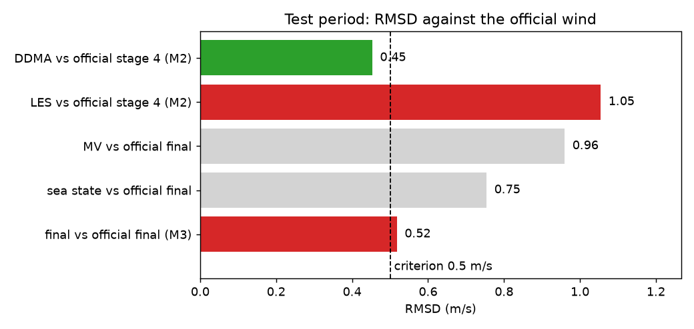
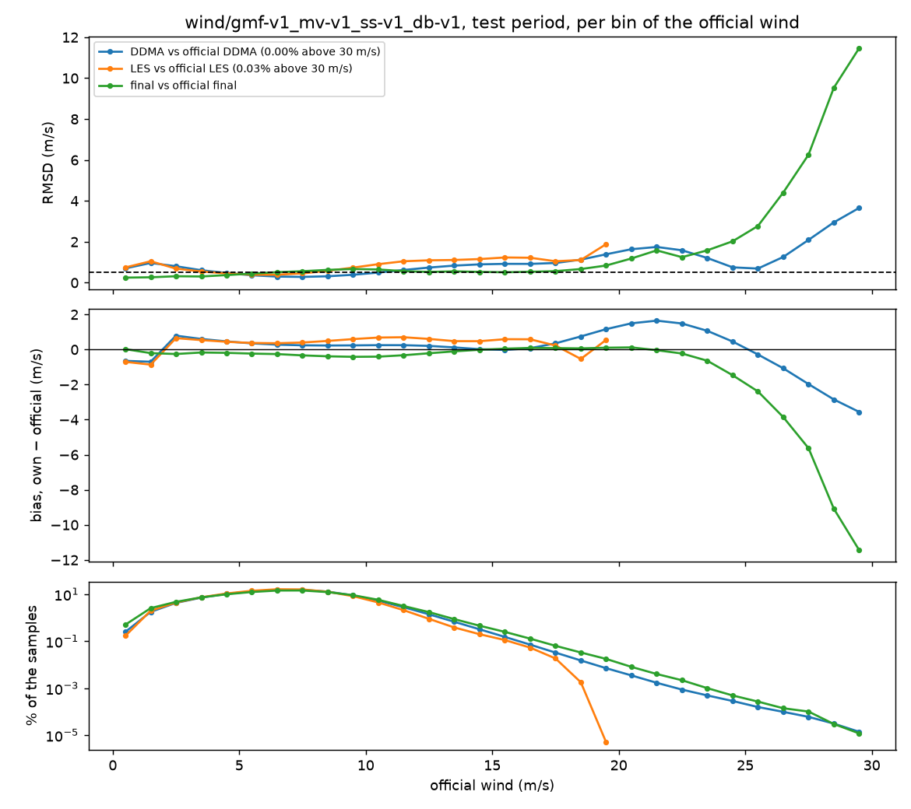
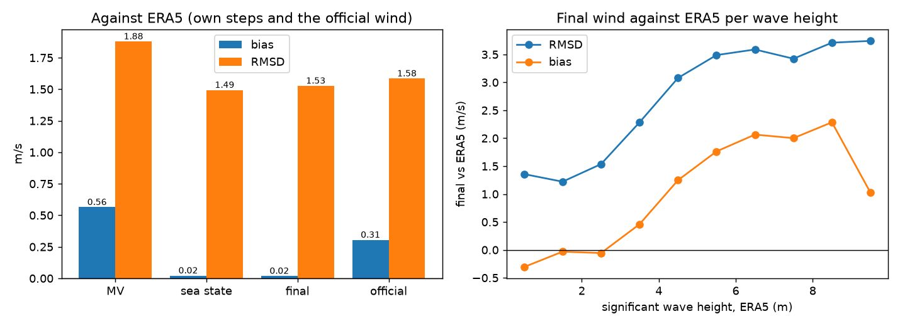
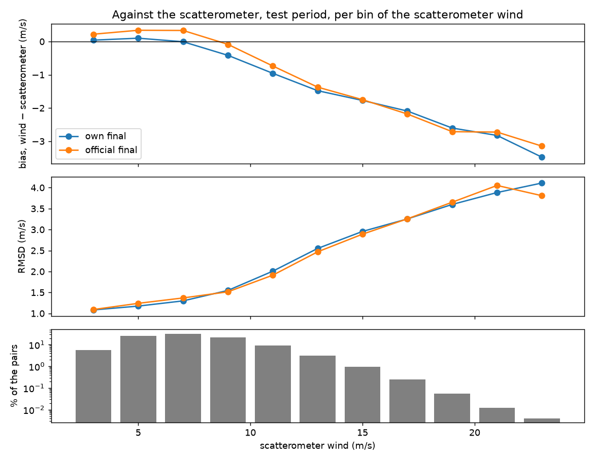

Avaliação em 2022 (M2 e M3)¶
O primeiro resultado de verificação do projeto. As tabelas próprias (GMF, MV, estado do mar e debias, versão v1) foram ajustadas só com 2021 e aplicadas ao período de teste, fevereiro a dezembro de 2022, que elas nunca viram. A versão de vento avaliada é gmf-v1_mv-v1_ss-v1_db-v1.
| Período | 01/02/2022 a 31/12/2022, 334 dias, nenhum sem ERA5 |
| Amostras comparadas | 437 milhões, as que passam no QC oficial |
| Data da rodada | 23/10/2026, no servidor do projeto |
Resumo
- M2: não passou. A tabela do NBRCS passa (0,45 m/s), a do LES não (1,05 m/s).
- M3: não passou, por pouco. O vento final fica a 0,52 m/s do oficial, para um limite de 0,5 m/s.
- Contra o ERA5, o vento próprio empata com o oficial: RMSD de 1,53 m/s contra 1,58 m/s, e viés quase zero (+0,02 m/s contra +0,31 m/s).
- Contra o escaterômetro (referência independente), o vento próprio também empata com o oficial: RMSD de 1,48 m/s contra 1,49 m/s, com 44 milhões de pares. Os dois subestimam o vento forte (−1,5 m/s a 12 m/s e até −3,5 m/s acima de 22 m/s). Este resultado ainda deixa de fora os ventos de até 3 m/s e acima de 30 m/s, por um filtro que vai ser corrigido (detalhes).
- Combinar os dados ajuda: na mesma régua (o ERA5), cada etapa da cadeia melhora o vento, e a correção de estado do mar é a que mais ajuda.
- Boa parte da falha do LES vem de 0,03% das amostras em que o vento LES oficial é de 68 m/s ou mais, mas o vento final oficial delas é de cerca de 9 m/s. Sem elas, o RMSD do LES cairia para 0,58 m/s, mas o ATBD as considera válidas, então continuam na conta (detalhes).
Siglas e termos¶
O vento sai de uma cadeia de etapas, como uma linha de montagem: cada uma recebe o vento da anterior e o corrige um pouco. O método completo está em Método LUT.
flowchart LR
A[NBRCS] --> B[vento DDMA]
C[LES] --> D[vento LES]
B --> E[MV]
D --> E
E --> F[estado do mar]
F --> G[final]As etapas do vento
| Nome nas figuras | O que é |
|---|---|
| DDMA | O vento calculado só a partir do NBRCS, que mede quanto sinal voltou do mar (Fundamentos). Uma tabela (a GMF) converte o NBRCS em vento. DDMA (DDM Average, média da DDM) é o nome que o ATBD dá a esse observável |
| LES | O vento calculado só a partir do LES (Leading Edge Slope), a inclinação da subida do sinal (Fundamentos). Outra tabela, outro vento: são duas estimativas independentes do mesmo vento |
| MV | Minimum Variance, variância mínima: a combinação do vento DDMA com o vento LES numa média ponderada, com pesos escolhidos para que o erro do resultado seja o menor possível |
| Estado do mar (sea state) | O MV corrigido pela altura das ondas. Com ondas grandes, o mar fica mais rugoso do que o vento sozinho explicaria, e a tabela erra. Essa etapa compensa isso |
| Final | O estado do mar mais o debias: um ajuste fino que tira a pequena tendência de cada combinação de satélite, antena e satélite GPS. É o vento entregue ao usuário |
Com o que se compara
| Termo | O que é |
|---|---|
| Oficial | O vento do produto da NASA (CYGNSS L2 v3.2), calculado com as tabelas da NASA. O projeto refaz o algoritmo com tabelas próprias e compara cada etapa com a equivalente da NASA |
| DDMA oficial, LES oficial | Os ventos DDMA e LES do produto da NASA, antes da combinação e das correções. São a etapa 4 do algoritmo no ATBD (por isso aparecem também como "oficial da etapa 4"). Servem para julgar só as tabelas próprias: é o M2 |
| Final oficial | O vento final da NASA (a variável wind_speed), com todas as correções. Serve para julgar a cadeia inteira: é o M3 |
| ERA5 | O vento de um modelo meteorológico (reanálise do ECMWF) no mesmo ponto e hora. É uma régua comum: todas as etapas podem ser medidas contra ele e comparadas entre si |
As medidas de erro
| Termo | O que é |
|---|---|
| RMSD | Root Mean Square Difference, a diferença típica entre dois ventos, em m/s. Em cada ponto subtrai-se um vento do outro, eleva-se ao quadrado, tira-se a média e depois a raiz. Exemplo: diferenças de 0,3, −0,5 e 0,4 m/s dão quadrados 0,09, 0,25 e 0,16, média 0,167, raiz 0,41 m/s. Por causa do quadrado, diferenças grandes pesam muito |
| Viés | A média da diferença, com sinal (próprio menos referência). Diz se um vento fica sistematicamente acima (positivo) ou abaixo (negativo) do outro |
| Correlação | De 0 a 1: se os dois ventos sobem e descem juntos. Perto de 1 quer dizer que acompanham quase perfeitamente, mesmo que haja um deslocamento constante (viés) |
| M2, M3, M4 | Marcos do projeto com critério de aceitação (Início). M2: tabelas próprias, RMSD < 0,5 m/s contra o DDMA e o LES oficiais. M3: cadeia completa, RMSD < 0,5 m/s contra o final oficial. M4: erro contra boias |
| QC oficial | O controle de qualidade do produto da NASA: só entram na conta as amostras que ele aprova |
Os vereditos¶

A figura responde a duas perguntas diferentes, e por isso tem dois painéis. As barras de um painel não se comparam com as do outro, porque cada painel usa uma referência diferente.
À esquerda: o vento próprio reproduz o oficial? Cada barra compara uma etapa própria com a mesma etapa da NASA. É o que decide o M2 e o M3. Verde passa no critério de 0,5 m/s, vermelho não passa. Uma barra curta aqui quer dizer "imita bem a NASA", e não "acerta o vento real": o 0,45 do DDMA mostra que a tabela do NBRCS própria é parecida com a da NASA, não que o DDMA sozinho seja o melhor vento.
| Marco | Comparação | RMSD | Viés | Correlação | Resultado |
|---|---|---|---|---|---|
| M2 | DDMA × DDMA oficial | 0,45 m/s | +0,31 m/s | 0,992 | passa |
| M2 | LES × LES oficial | 1,05 m/s | +0,42 m/s | 0,931 | não passa |
| M3 | Final × final oficial | 0,52 m/s | −0,29 m/s | 0,988 | não passa |
O vento final próprio acompanha o oficial de perto (correlação de 0,99). O que falta para o M3 é um viés pequeno e constante: o vento final fica, em média, 0,29 m/s abaixo do oficial. Sem esse viés, a diferença seria de 0,43 m/s.
À direita: o vento acerta o vento? Aqui todas as etapas são medidas contra a mesma referência, o ERA5, então dá para compará-las entre si. A barra cinza é o vento final da NASA, na mesma régua.
| Etapa | RMSD contra ERA5 |
|---|---|
| DDMA (só o NBRCS) | 1,94 m/s |
| LES (só o LES) | 2,21 m/s |
| MV (DDMA + LES) | 1,88 m/s |
| Estado do mar | 1,49 m/s |
| Final | 1,53 m/s |
| Final oficial (NASA) | 1,58 m/s |
- Combinar ajuda. O MV é melhor que o DDMA e o LES sozinhos, e a correção de estado do mar é o maior ganho da cadeia.
- O debias não ajuda contra o ERA5. O RMSD sobe um pouco, de 1,49 para 1,53 m/s. O debias foi feito para tirar a tendência de cada satélite, não para reduzir o erro total.
- O ERA5 favorece o vento próprio, porque as tabelas foram ajustadas com ele (ver abaixo).
Uma comparação que não aparece na figura
As etapas intermediárias próprias (MV e estado do mar) também podem ser comparadas com o final oficial: dão 0,96 e 0,75 m/s. Esses números saíram da figura porque confundem: o final oficial já passou por todas as correções, e o MV ainda não. É natural que fique longe, sem que isso diga se o MV é bom.
Erro por faixa de vento¶

Os três painéis usam as mesmas faixas de 1 m/s do vento oficial: em cima o RMSD, no meio o viés (próprio menos oficial), embaixo a fração das amostras em cada faixa, em escala logarítmica.
- Entre 3 e 18 m/s, onde estão quase todas as amostras, o vento final fica perto do limite de 0,5 m/s.
- Acima de 23 m/s o vento final subestima muito o oficial (até −11 m/s perto de 30 m/s). São menos de 0,01% das amostras: pesam pouco no RMSD total, mas mostram que as tabelas próprias saturam em vento forte. Com um ano de treino há poucas amostras nessas faixas.
- A curva do LES some em 20 m/s porque o vento LES oficial quase não tem valores entre 20 e 68 m/s. Em seguida, aparece um grupo de cerca de 130 mil amostras (0,03%) com valores de 68 m/s ou mais, fora do eixo da figura. Nessas amostras a diferença é de cerca de 51 m/s, e só elas levam o RMSD do LES de 0,58 para 1,05 m/s. Ver a seção seguinte.
Os valores de 68 a 70 m/s do LES oficial¶
Olhando um dia (01/03/2022) em detalhe:
| Nessas amostras | |
|---|---|
| Quantas | 456 no dia, depois do QC oficial |
| Vento LES oficial | 68,5 a 69,8 m/s, quase todas perto de 69,8 |
| Vento LES próprio | 16 a 22 m/s (média de 18 m/s) |
| Vento final oficial | média de 8,8 m/s |
| Ângulo de incidência | de 12° a 64°, sem concentração num ângulo |
- Não é vento real. O próprio produto oficial dá a essas amostras um vento final de cerca de 9 m/s. O vento LES de 70 m/s praticamente não aparece no vento final; ainda não verificamos em que etapa ele é neutralizado.
- Pelo ATBD, esses valores são válidos. Quando o valor medido fica fora da faixa da tabela, o ATBD manda extrapolar em linha reta (seção 5.5), e o vento LES só é marcado como inválido a partir de 99 m/s (flags de qualidade do produto). Então a regra do ATBD não permite descartar essas amostras da comparação.
- O código próprio também extrapola, da mesma forma, mas chega a cerca de 18 m/s. A diferença deve estar no extremo de vento forte da tabela do LES, que difere entre a tabela própria e a oficial. A causa ainda não foi investigada.
- Consequência para o M2. Excluir essas amostras deixaria o LES a 0,58 m/s, ainda acima do limite. Mas, como o ATBD as considera válidas, excluí-las seria ajustar o teste para passar. Por isso o resultado oficial do M2 continua sendo 1,05 m/s, e o número sem essas amostras (0,58 m/s) fica registrado só como diagnóstico.
Comparação com o ERA5¶

À esquerda, cada etapa do algoritmo próprio e o vento oficial contra o vento do ERA5 no mesmo ponto e hora. À direita, o erro do vento final contra o ERA5 por altura de onda.
| Vento | Viés contra ERA5 | RMSD contra ERA5 | Correlação |
|---|---|---|---|
| MV | +0,56 m/s | 1,88 m/s | 0,771 |
| Depois do estado do mar | +0,02 m/s | 1,49 m/s | 0,846 |
| Final próprio | +0,02 m/s | 1,53 m/s | 0,847 |
| Oficial do CYGNSS | +0,31 m/s | 1,58 m/s | 0,842 |
- A correção de estado do mar é a etapa que mais ajuda: tira quase todo o viés e reduz o RMSD de 1,88 para 1,49 m/s.
- O debias quase não muda o resultado contra o ERA5: o RMSD sobe um pouco (de 1,49 para 1,53 m/s).
- Com ondas acima de 3 m o erro cresce e o vento final passa a superestimar o ERA5 (até +2 m/s com ondas de 8 m). Mar muito agitado é minoria, mas é onde o algoritmo é mais fraco.
O ERA5 não é uma referência independente aqui
As tabelas foram ajustadas com o ERA5 de 2021. É esperado que o vento próprio concorde com o ERA5 de 2022 melhor que o oficial, que foi feito de outra forma. Por isso o empate com o oficial não prova que o vento próprio é melhor. Isso só uma referência independente pode mostrar: o escaterômetro (seção seguinte) e as boias.
Comparação com o escaterômetro¶
O escaterômetro é um radar em órbita feito para medir vento no mar (Escaterômetro). Nem as tabelas próprias nem as da NASA foram ajustadas com ele, então ele é a primeira régua independente do projeto. Cada ponto do CYGNSS foi pareado com a medida do escaterômetro mais próxima, a até 25 km e 30 min (três instrumentos, ASCAT do Metop-B e do Metop-C e HSCAT do HY-2B, nas duas passagens).
Resultado provisório: falta incluir os ventos extremos
O filtro de qualidade usado aqui aceitou só as células do escaterômetro sem nenhuma marca. Duas das marcas do produto, porém, não indicam defeito, só a faixa do vento: vento de até 3 m/s e vento acima de 30 m/s. Por isso esta comparação deixou de fora todos os ventos de até 3 m/s e acima de 30 m/s (o menor vento pareado é de 3,01 m/s). O filtro vai ser corrigido para aceitar essas duas marcas e continuar recusando as de defeito (chuva, gelo, terra, falha de controle de qualidade); o pareamento e a avaliação serão refeitos, e esta seção, atualizada.
| Pares | 44,1 milhões em 334 dias (nenhum dia sem escaterômetro), cerca de 10% dos pontos com QC oficial |
| Distância e tempo | mediana de 11 km e 14 min (num dia típico) |
| Faixa de vento comparada | de 3 a 30 m/s (ver o aviso acima) |
| Vento | Viés contra o escaterômetro | RMSD | Correlação |
|---|---|---|---|
| Final próprio | −0,23 m/s | 1,48 m/s | 0,820 |
| Final oficial (NASA) | +0,05 m/s | 1,49 m/s | 0,815 |

As faixas são de 2 m/s do vento do escaterômetro. Em cima o viés (vento menos escaterômetro), no meio o RMSD, embaixo a fração dos pares em cada faixa, em escala logarítmica.
| Faixa (m/s) | Pares | Viés próprio | Viés oficial | RMSD próprio | RMSD oficial |
|---|---|---|---|---|---|
| 3 a 4 | 2,5 mi | +0,04 | +0,22 | 1,08 | 1,09 |
| 4 a 6 | 11,5 mi | +0,10 | +0,34 | 1,17 | 1,24 |
| 6 a 8 | 14,3 mi | −0,01 | +0,33 | 1,30 | 1,37 |
| 8 a 10 | 9,7 mi | −0,42 | −0,09 | 1,55 | 1,52 |
| 10 a 12 | 4,1 mi | −0,96 | −0,74 | 2,01 | 1,91 |
| 12 a 14 | 1,4 mi | −1,48 | −1,37 | 2,55 | 2,47 |
| 14 a 16 | 421 mil | −1,77 | −1,75 | 2,96 | 2,89 |
| 16 a 18 | 107 mil | −2,09 | −2,18 | 3,25 | 3,26 |
| 18 a 20 | 24 mil | −2,60 | −2,71 | 3,60 | 3,65 |
| 20 a 22 | 5 mil | −2,82 | −2,72 | 3,88 | 4,05 |
| 22 ou mais | 2 mil | −3,48 | −3,15 | 4,11 | 3,81 |
Como ler:
- Na régua independente, os dois ventos empatam no total (RMSD de 1,48 contra 1,49 m/s).
- Até 8 m/s, onde estão quase dois terços dos pares (64%), o vento próprio tem viés mais perto de zero e RMSD um pouco menor. Acima de 8 m/s, ele subestima um pouco mais que o oficial.
- Os dois subestimam muito o vento forte, cada vez mais à medida que o vento cresce. É o que se espera de duas cadeias ajustadas ao ERA5, que subestima vento forte. Mostra onde está o maior espaço para melhorar, sem descartar os extremos.
- O viés do M3 muda de leitura. Contra o ERA5, o oficial fica 0,31 m/s acima e o próprio, 0,02. Contra o escaterômetro, o oficial fica 0,05 m/s acima e o próprio, 0,23 abaixo. Nesses pontos, o escaterômetro fica cerca de 0,25 m/s acima do ERA5. Então o +0,31 do oficial contra o ERA5 parece ser, em boa parte, o ERA5 baixo, e não um defeito do oficial: aproximar o vento próprio do oficial (o que o M3 pede) deve também aproximá-lo do vento medido.
O que o escaterômetro mede
O vento do produto é o vento equivalente de tensão a 10 m, que difere um pouco do vento a 10 m de um anemômetro; ele é usado como o produto o entrega, sem conversão. Se o INPE prefere uma conversão é uma pergunta em aberto (Pendências).
Boias (M4)¶
O relatório do M4 foi gerado, mas ficou insuficiente: não há nenhum pareamento com boia em oceano aberto em 2022, e o mínimo é de 1.000. O SiMCosta tem só 61 dias baixados, todos de 2021, e o PIRATA e o PNBOIA ainda não têm fonte (Estado dos downloads).
O que vem a seguir¶
- Comparar o extremo de vento forte da tabela do LES, a própria e a oficial, para entender por que a extrapolação oficial chega a 70 m/s e a própria a cerca de 18 m/s nas mesmas amostras.
- Investigar a diferença restante do LES (0,58 m/s), por faixa de ângulo e de vento.
- Investigar o viés de −0,29 m/s do vento final contra o oficial, que sozinho decide o M3. A comparação com o escaterômetro indica que corrigi-lo também aproximaria o vento próprio do vento medido.
- Corrigir o filtro de qualidade do escaterômetro para incluir os ventos de até 3 m/s e acima de 30 m/s, e refazer a comparação.
- Melhorar o vento forte, onde os dois ventos mais erram contra o escaterômetro.
Os critérios de 0,5 m/s são propostas iniciais. Como diz Andamento por etapa, um critério não atingido é registrado e diagnosticado, e o teste não é ajustado para passar.
De onde vêm os números
Dos relatórios m2.json, m3.json e m4.json do job evaluate, em reports/gmf-v1_mv-v1_ss-v1_db-v1/. As figuras são feitas por uv run task docs-figures.